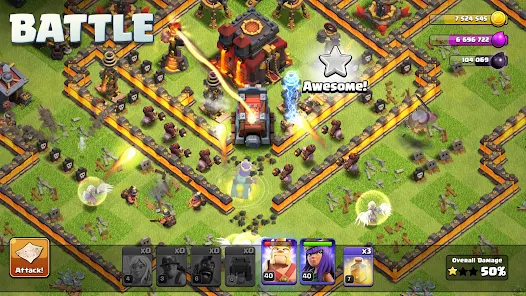
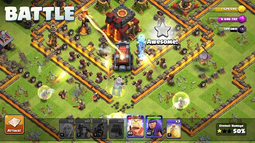

Clash of Clans
Clash of Clans is a 2012 free-to-play mobile strategy video game developed and
published by Finnish game developer Supercell. The game was released for iOS
platforms on August 2, 2012, and on Google Play for Android on October 7, 2013.
Clash of Clans was released to generally positive reviews from critics. Four spin-off
games in the same universe of Clash of Clans were developed by Supercell. The first,
Clash Royale, was released in 2016. The other three, Clash Quest, Clash Mini, and
Clash Heroes, were announced in April 2021. Clash Quest development was discontinued
on 17 August 2022.
Offical Site>
Game Play:-
 

Clash of Clans is an online multiplayer game in which players form communities
called clans, train troops, and attack other players to earn resources. There are
four currencies or resources in the game. Gold and elixir can be used to build
and upgrade defenses and traps that protect the player's village from other players
attacks and to build and upgrade buildings. Elixir and Dark Elixir are also used to
upgrade troops and spells. In the past, they were also used to train the troops but
as of the July 2022 training is free. Gems are the premium currency. Attacks
are rated on a three-star scale and have a maximum timed length of three minutes.
Buildings
To earn and store gold and elixir, players must build mines and storage
for each. Elixir is used to carry out research in the laboratory to upgrade troops, and
to build and upgrade certain (mostly offensive) buildings. Gold is used to build defensive
buildings and to upgrade the town hall, which allows access to more buildings and higher
levels for existing buildings. At Town Hall 7, dark elixir becomes available; this type
of elixir is used to train and upgrade dark elixir troops, heroes such as the Barbarian
King, and starting at Town Hall 8, create dark spells. To earn and store dark elixir,
players must build dark elixir drills and dark elixir storages.
There are a number of buildings available to the player to defend their village, including
cannons, mortars, bombs, teslas, traps, archer towers, wizard towers, inferno towers, eagle
artilleries, scattershots, Monolith, and Spell Tower. Players can also build walls, which
can be upgraded further as a player's town hall level increases.[13][14]As the Town Hall
level increases, the player gets access to stronger buildings such as the Giga Tesla and
the Eagle Artillery.
Troops and spells
The game has two kinds of barracks and factories, a basic
version and a "dark" version of each. Initially, the barracks were used to train troops
using elixir, whereas dark barracks trained troops using dark elixir. However, the July
2022 update made all troops free to train, with the primary limitation being space in the
army camps. Both sets of barracks can be upgraded to higher levels to unlock more
troops (fifteen total troops for the barracks, and eight for the dark barracks)
The spell factories follow the same pattern - the normal spell factory creates spells
using elixir, and the dark spell factory using dark elixir. In addition, the dark spell
factory produces spells that require less space, allowing more of these spells to be used
in a battle. As the player progresses, several new troops and spells are able to be unlocked.
At Town Hall 12, the Workshop can be built to construct seven different types of siege
machines; the player is initially limited to only three, but upgrading the Town Hall to
level 15 allows them to upgrade the workshop to level 7 and build each siege machine.
Introduced in March 2020, Super Troops are troops that are more powerful troops than their
original counterparts and have special abilities.
Town Hall 14 unlocks the Pet House, a building used to assign one of four pets to heroes,
each serving a different role in assisting a hero.
Town Hall 15 introduces the new Recall spell, 4 hero pets, the Electro Titan troop,
and the battle drill siege machine. The Recall spell remove units from the attack and
allows you to redeploy the troops on another position and is unlocked at Town Hall 13.
The four new pets are Frosty which slows down enemies, Diggy which digs underground and
stuns defenses, Poison Lizard that poisons nearby troops or defenses, and lastly Phoenix
where when the Hero is knocked out it revives the Hero and gives it a temporary shield of
invulnerability.
Clans and clan wars
Clans are groups of players who join to support each other, either materially with troops
or with advice. Players can join clans once they rebuild the special Clan Castle building.
A major component of Clash of Clans is clans facing off against one another in the
"clan wars". Clan leaders and co-leaders can begin wars against other clans. Each clan
is then given one "preparation day" and one "war day." When a player attacks a member of
the opposing clan, they receive stars based upon the amount of destruction they cause to
the opponent's base: 50% damage or more gives 1 star, destroying the townhall also gives
1 star and destroying the entire base gives the remaining third star. Each player is limited
to two attacks per war and the team with the most stars at the end of the war day is declared
victorious. If the two clans' number of stars are equal, then the victor is the one that has
a greater percent of destruction. Players receive bonus war loot if they use their attacks
in the war. This loot may be different on different bases and is decided by Supercell; the
top base has the most war bonus loot and the last base has the least amount of bonus loot.
If the clan wins the war, the bonus loot is fully delivered to the player but during a loss
or draw one-third of the loot is delivered to the player.